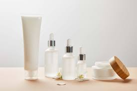
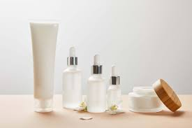

At Skin by Rae, we believe your skin is a reflection of your inner vitality and deserves expert care. That’s why we are passionate about providing personalized, professional skincare treatments that enhance not only your appearance but also your confidence. Our mission is to empower you to love the skin you’re in while helping you achieve your beauty goals.
Healthy, glowing skin starts with understanding. Every face is unique, and so are its needs. At Skin by Rae, we take the time to analyze your skin type, concerns, and lifestyle to craft a customized plan that delivers real results. From acne-prone to aging skin, we offer targeted solutions that cater to your individual journey.
Our services are rooted in advanced techniques and high-quality products. Whether you’re looking for a relaxing facial, an exfoliating peel, or cutting-edge treatments, we combine innovation with care to ensure your skin gets the best. At Skin by Rae, we are committed to using safe, effective methods that rejuvenate and restore your natural glow.
Services We Offer
Facial
Microderm
Microneedle
Skincare is more than a treatment; it’s self-care. We’ve designed every visit to be a calming escape from the stresses of daily life. From the moment you step into our serene space, you’ll feel pampered, valued, and ready to unwind. Our goal is to make every session a restorative experience that benefits both your skin and your spirit.
Education is a cornerstone of what we do. At Skin by Rae, we want you to leave not only with beautiful results but also with the knowledge to maintain them. We’re here to guide you through the best practices, products, and routines for keeping your skin healthy and radiant every day.
Your skin’s health is an investment in your well-being. With consistent care and a holistic approach, we help you achieve lasting results that celebrate your natural beauty. Trust us to be your partner in this transformative journey to better skin and enhanced confidence.
 
